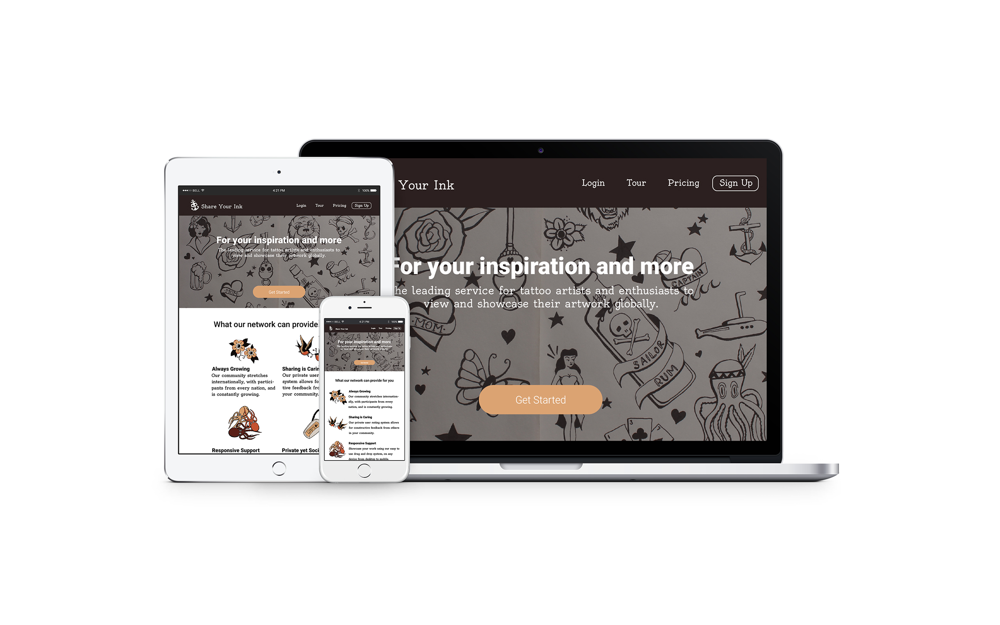

Case Study: iOS App
Glykos: Check your blood glucose without drawing
a single drop of blood.
An iOS app based on upcoming technology from the University of Concordia, which will be capable of monitoring glucose levels in the blood without the use of needles. The challenge for this app was the UX/UI aspect of the app which needs to have fully functionality and deliver accurate information for the non-tech-savvy aging baby-boomer population.

Case Study: Responsive SAAS
Share Your Ink: For your inspiration and more.
The priority for this website was accessibility first, as well as to be responsive on all screen sizes, browsers, and platforms. Creating a site that delivered the information of the service to the user and funnelled them to the sign up page thereafter.

Case Study: iOT Smart Product
ProGear: Making revolutions for beginner cyclists wanting to break into higher performance.
Cadence is a conceptual smart product equipped with sensors to track elevation changes, pedal rate, and force used. The user is then provided with the necessary information to reach the perfect rate of cadence, which gears to use and when, and how much force is necessary.
About Me
A Design Robot by day, a Ninja by night. An amateur philosopher on the bus ride home, and visionary on weekends. Feel free to get in touch with me for any and all your design solutions.
Let's connect